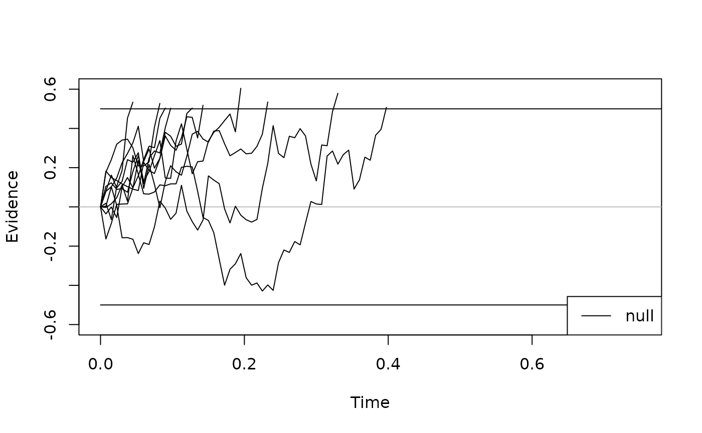
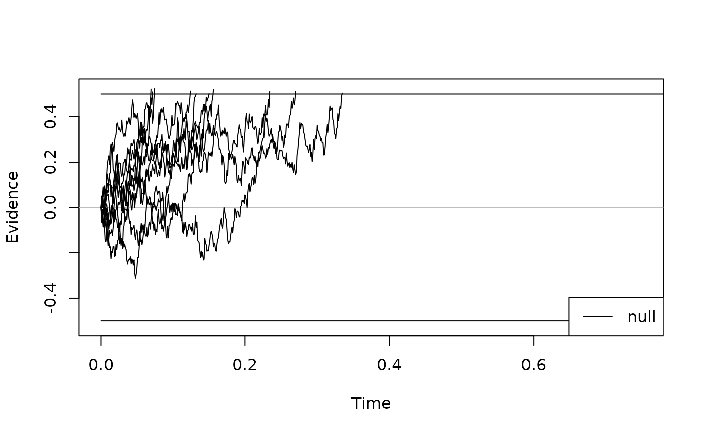
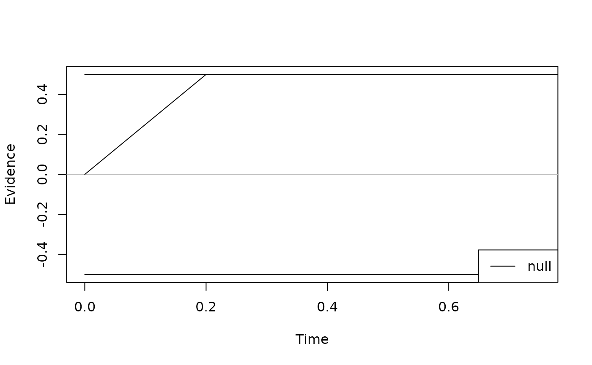

Core DDM Parameters: Impact on RTs and Accuracy
Source:vignettes/predictions_simple_ddm.Rmd
predictions_simple_ddm.RmdIn this vignette, we explore how the core parameters of the drift diffusion model influence mean RTs and accuracy.
We can create the classical (Ratcliff) DDM, which is pre-built in
dRiftDM, in its simplest version using the function
ratcliff_dm():
model <- ratcliff_dm()To access the parameter settings, we can use the coef()
method:
coef(model)
#> muc b non_dec
#> 3.0 0.6 0.3Here, we can see the core parameters of the classical DDM and their
current values: the drift rate muc is 3.0, the boundary
b is 0.6, and the non-decision time non_dec is
0.3 (seconds). We can alter the parameter settings like this:
To visualize the model, we can simulate some evidence accumulation
trajectories, using the function simulate_traces() and the
generic plot() method.
set.seed(1)
traces <- simulate_traces(model, k = 10)
plot(traces, col = "black")
You might wonder why these trajectories appear so “coarse.” This results from the discretization settings of the underlying solver that computes the first-passage times when fitting the model. To obtain a smoother plot, we can temporarily increase the resolution in the time domain:
prms_solve(model)["dt"] = .001 # set to 1 ms step size (for a nice plot)
set.seed(1)
traces <- simulate_traces(model, k = 10)
plot(traces, col = "black")
Sometimes, we might want to visualize the model without noise. In
this case, the argument sigma of the
simulate_traces() function comes in handy.
traces <- simulate_traces(model, k = 1, sigma = 0)
plot(traces, col = "black")
To derive basic model predictions for mean response times (RTs) and
accuracy, we can use the calc_stats() method and the
argument type = "basic_stats":
prms_solve(model)["dt"] = .010 # set it back to a 10 ms step size (for speed)
calc_stats(model, type = "basic_stats")
#> Type of Statistic: basic_stats
#>
#> Source Cond Mean_corr Mean_err SD_corr SD_err P_corr
#> 1 pred null 0.469 0.469 0.123 0.123 0.924
#>
#> (access the data.frame's columns/rows as usual)Note that the mean predicted RTs for correct and incorrect responses are actually identical for the classical Ratcliff DDM! This hold as long as the model doesn’t include trial-by-trial variability in the starting point or drift rate. Once we incorprate the respective variability parameters, we produce fast and slow errors, respectively.
Let’s illustrates the effects of each parameter on predicted mean correct RTs and accuracy by systematically varying each parameter one after the other. For this example demonstration, let’s use the following parameter ranges:
- Drift rate:
- Boundary:
- Non-decision time:
The following code iterates over each parameter, plotting the influence of each parameter on RTs (upper panels) and accuracy (lower panels).
par(mfcol = c(1, 2))
# define the parameter ranges
muc_seq <- seq(1.5, 5.0, by = 0.5)
b_seq <- seq(0.2, 0.9, by = 0.1)
t0_seq <- seq(0.1, 0.45, by = 0.05)
# small helper function
get_stats <- function(prm_val, prm_label) {
coef(model)[prm_label] <- prm_val
stats <- calc_stats(model, type = "basic_stats")
stats <- stats[c("Mean_corr", "P_corr")]
return(as.numeric(stats))
}
# Drift Rate Plots
par(mfcol = c(1, 2))
stats_mu <- sapply(muc_seq, get_stats, prm_label = "muc")
plot(stats_mu[1, ] ~ muc_seq,
type = "l",
ylim = c(0.2, 0.8), xlab = "muc", ylab = "correct RTs", main = "Influence: Drift Rate"
)
plot(stats_mu[2, ] ~ muc_seq,
type = "l",
ylim = c(0.5, 1), xlab = "muc", ylab = "Accuarcy", main = "Influence: Drift Rate"
)
# Boundary Plots
par(mfcol = c(1, 2))
stats_b <- sapply(b_seq, get_stats, prm_label = "b")
plot(stats_b[1, ] ~ b_seq,
type = "l",
ylim = c(0.2, 0.8), xlab = "b", ylab = "correct RTs", main = "Influence: Boundary"
)
plot(stats_b[2, ] ~ b_seq,
type = "l",
ylim = c(0.5, 1), xlab = "b", ylab = "Accuarcy", main = "Influence: Boundary"
)
# Non-Decision Time Plots
par(mfcol = c(1, 2))
stats_non_dec <- sapply(t0_seq, get_stats, prm_label = "non_dec")
plot(stats_non_dec[1, ] ~ t0_seq,
type = "l",
ylim = c(0.2, 0.8), xlab = "non_dec", ylab = "correct RTs", main = "Influence: Non-Decision Time"
)
plot(stats_non_dec[2, ] ~ t0_seq,
type = "l",
ylim = c(0.5, 1), xlab = "non_dec", ylab = "Accuarcy", main = "Influence: Non-Decision Time"
)The effects of these variations on RTs and accuracy are straightforward:
As
mucincreases, (1) RTs decrease and (2) accuracy increases.As
bincreases, (1) RTs increase and (2) accuracy increases. This reflects the well-known speed–accuracy trade-off: The faster responses, the more errors are made.As
t0increases, (1) RTs increase while (2) accuracy remains unchanged.